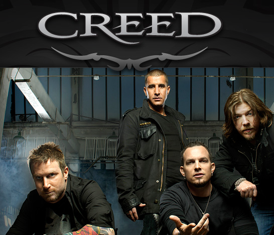

A creed is a statement of belief usually religious belief or faith often recited as part of a religious service. The word derives from the Latin: credo for "I believe" (because the Latin translation of the Apostles' Creed and the Nicene Creed both begin with this word). A creed is sometimes referred to as a symbol (Greek: σύμβολο[ν], sýmbolo[n]), signifying a "token" by which persons of like beliefs might recognize each other.
One of the most widely used creeds in Christianity is the Nicene Creed, first formulated in AD 325 at the First Council of Nicaea. It was based on Christian understanding of the Canonical gospels, the letters of the New Testament and to a lesser extent the Old Testament. Affirmation of this creed, which describes the Trinity, is generally taken as a fundamental test of orthodoxy for mostChristian denominations. The Apostles' Creed is also broadly accepted. Some Christian denominations and other groups have rejected the authority of those creeds.
Whether Judaism is creedal has been a point of some controversy. Though some say Judaism is noncreedal in nature, others say it recognizes a single creed, the Shema which begins: "Hear, O Israel: the LORD our God, the LORD is one."
Muslims declare the shahada, or testimony: "I bear witness that there is no god but God, and that Muhammad is His messenger."